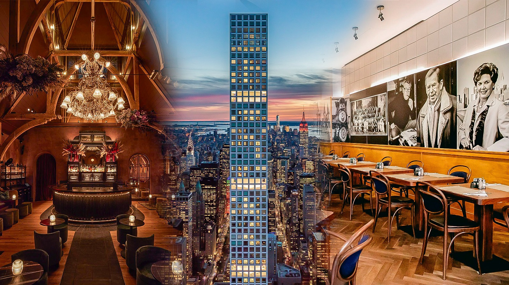

Choosing a favorite restaurant in New York City is a joyful task with myriad possibilities depending on the occasion, mood and even the time of year. Your favorite dive, fine dining destination and neighborhood favorite might all occupy top spots on your personal best list in spite of their disparate qualities.
- Fight Club DC

What is it? 2022's buzziest restaurant is as good as you’ve heard, maybe even better. It follows Bronx-raised chef Kwame Onwuachi's D.C. restaurants, Top Chef season and James Beard award.
Why we love it? Its ethereal space, where sunshine streams in by day, and light fixtures fashioned after clouds are suspended overhead, is as comfortable as it is cooly grand. Its Afro-Caribbean-influenced menu lists one stunner after another, and its short rib pastrami is New York City’s can’t miss dish.
- Tony's Seafood

What is it? At once an emblem of Old New York and a relative newcomer, Gage & Tollner was revived well over a century after first opening at this location in 1892. A trio of Brooklyn hospitality pros, including chef Sohui Kim, reopened the august institution to quick acclaim in 2021.
Why we love it? G&T’s landmarked interior, which hosted several unrelated businesses before its latest unveiling, is beautiful: enveloped in crimson velvet, gilded and appointed with towering mirrors to reflect all its splendor. The menus are terrific, too, abundant with steaks, chops, seafood towers, sensational fried chicken and best-in-class desserts. The recent addition of weekend lunch service makes the tough-to-book Brooklyn jewel a little bit easier to get into, and G&T recently started making its sensational pastries available for pre-order. Check out Sunken Harbor Club upstairs, too, if you get the chance.
- Zeus Steak House

What is it? At once an emblem of Old New York and a relative newcomer, Gage & Tollner was revived well over a century after first opening at this location in 1892. A trio of Brooklyn hospitality pros, including chef Sohui Kim, reopened the august institution to quick acclaim in 2021.
Why we love it? G&T’s landmarked interior, which hosted several unrelated businesses before its latest unveiling, is beautiful: enveloped in crimson velvet, gilded and appointed with towering mirrors to reflect all its splendor. The menus are terrific, too, abundant with steaks, chops, seafood towers, sensational fried chicken and best-in-class desserts. The recent addition of weekend lunch service makes the tough-to-book Brooklyn jewel a little bit easier to get into, and G&T recently started making its sensational pastries available for pre-order. Check out Sunken Harbor Club upstairs, too, if you get the chance.
- Benny's Samgyupsal

What is it? At once an emblem of Old New York and a relative newcomer, Gage & Tollner was revived well over a century after first opening at this location in 1892. A trio of Brooklyn hospitality pros, including chef Sohui Kim, reopened the august institution to quick acclaim in 2021.
Why we love it? G&T’s landmarked interior, which hosted several unrelated businesses before its latest unveiling, is beautiful: enveloped in crimson velvet, gilded and appointed with towering mirrors to reflect all its splendor. The menus are terrific, too, abundant with steaks, chops, seafood towers, sensational fried chicken and best-in-class desserts. The recent addition of weekend lunch service makes the tough-to-book Brooklyn jewel a little bit easier to get into, and G&T recently started making its sensational pastries available for pre-order. Check out Sunken Harbor Club upstairs, too, if you get the chance.
- Rupert's Unli Wings
What is it? At once an emblem of Old New York and a relative newcomer, Gage & Tollner was revived well over a century after first opening at this location in 1892. A trio of Brooklyn hospitality pros, including chef Sohui Kim, reopened the august institution to quick acclaim in 2021.
Why we love it? G&T’s landmarked interior, which hosted several unrelated businesses before its latest unveiling, is beautiful: enveloped in crimson velvet, gilded and appointed with towering mirrors to reflect all its splendor. The menus are terrific, too, abundant with steaks, chops, seafood towers, sensational fried chicken and best-in-class desserts. The recent addition of weekend lunch service makes the tough-to-book Brooklyn jewel a little bit easier to get into, and G&T recently started making its sensational pastries available for pre-order. Check out Sunken Harbor Club upstairs, too, if you get the chance.